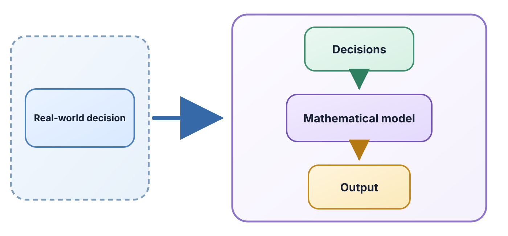
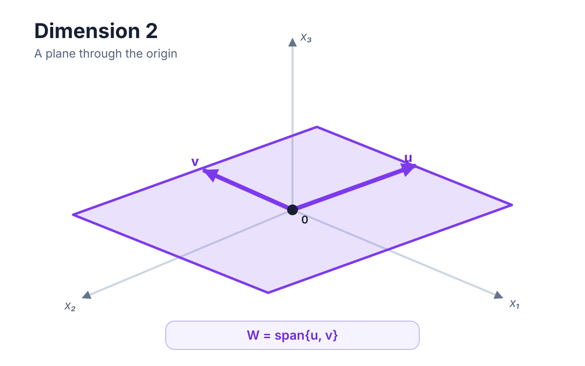
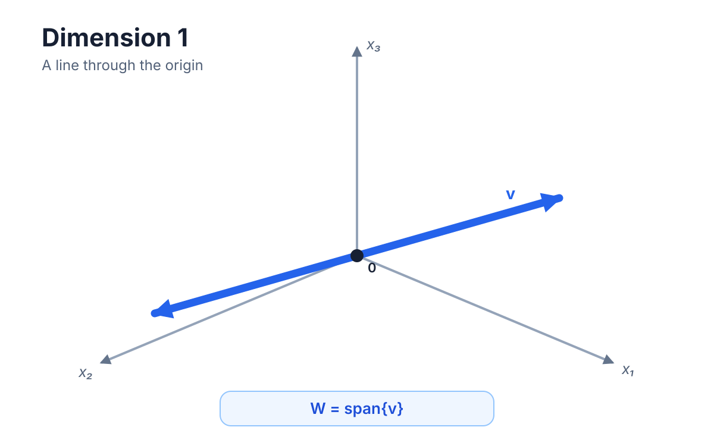
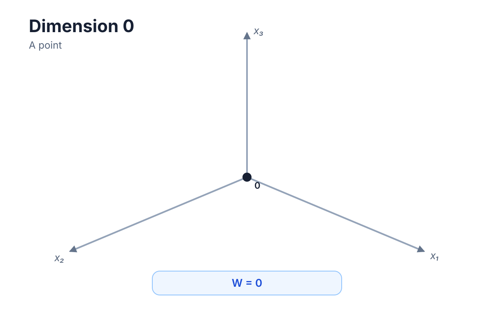
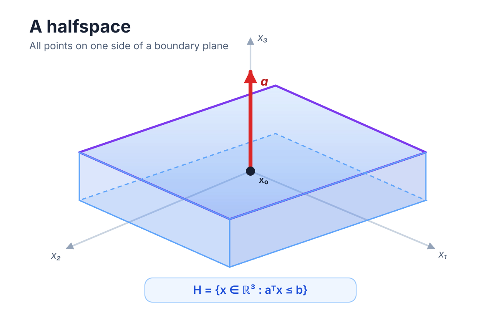
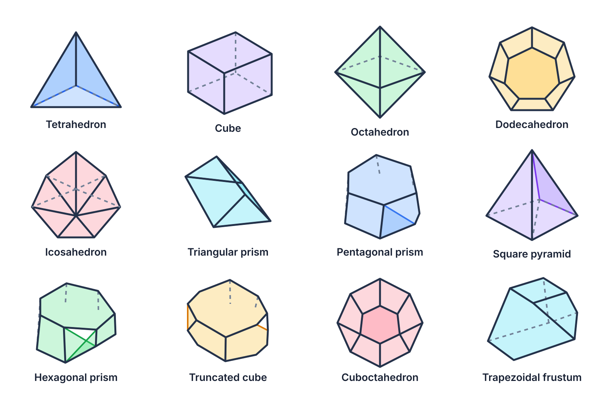
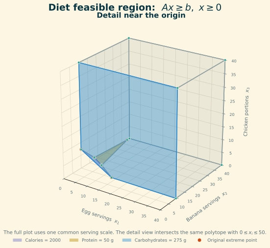

Introduction to Optimization
CO 250
Lecture 1
Kevin Shu
Lecture Outline
- Course Policies
- What is Optimization?
- Linear Algebra Review
- Linear Programming
Course Policies
Course Structure
- Lectures on Tuesdays & Thursdays - 10:00-11:30am
- Tutorials on Mondays - 2:30-3:20pm
- Group Work
- Quizzes
- Exams
- Midterm - Oct 26
- Final - TBD
- Homeworks
- Ungraded - unsubmitted
Grading
| Submission | Percentage* |
|---|---|
| Homework | 0 % |
| Quizzes | 10 % |
| Groupwork | 10 % |
| Midterm | 25% |
| Final | 55% |
* If a quiz or groupwork is missed, then we will not count that quiz, and instead, the weight of that work will be moved to the final.
At least 3 quizzes must be submitted to pass.
Textbook
A Gentle Introduction to Optimization
Groupwork
Circular Learning
- Break up into groups with a problem sheet
- Go around in a circle (taking turns talking)
- Summarize your contributions on a sheet of paper
- Submit the discussion summary for participation credit.
More details: https://learn.uwaterloo.ca/d2l/le/content/1289412/viewContent/6673033/View
Resources
- My Office Hours - Monday 10am-11am - MC 5028
- Learning How to Learn
- Student Success Office
What is Optimization?
How do we use mathematics to make better decisions?
Mathematical Modelling

Optimization is about studying the purple box.
Mathematical Optimization Problems
A mathematical optimization problem consists of
- a decision variable $x$ describing the choice we control,
- a feasible set $F$ describing which choices are allowed, and
- an objective function $f$ measuring the quality of a choice.
A feasible set can be discrete (for example, a yes/no decision) or continuous (for example, an amount of money).
Mathematical Optimization Problems
In notation, we often write
| max/min | $f(x)$ |
| such that | $x \in F$ |
Here, $f(x)$ is the objective function, and $F$ is the feasible set. We can choose the sense of the optimization to be max or min.
Mathematical Optimization Problems
E.g. what is the rectangle with perimeter 1 that has the largest area?
| max | $ab$ |
| such that | $2(a+b) = 1, a,b \ge 0.$ |
Linear Algebra Review
Linear Equations
A linear equation in variables $x_1, \dots, x_n$ is an equation of the form \[ a_1 x_1 + a_2 x_2 + \dots + a_n x_n = b. \]
The coefficients $a_i$ are fixed numbers.
E.g. \[ x_1 + 2 x_2 + 5 x_3 = 1. \]
Linear Equations
A system of linear equations in variables $x_1, \dots, x_n$ is the simultaneous list of linear equations \[ a_{11} x_1 + a_{12} x_2 + \dots + a_{1n} x_n = b_1. \] \[ a_{21} x_1 + a_{22} x_2 + \dots + a_{2n} x_n = b_2. \] \[\dots\] \[ a_{m1} x_1 + a_{m2} x_2 + \dots + a_{mn} x_n = b_m. \]
Note that $m$ can take on any value, and does not need to be $n$.
Matrices
We can make these equations easier to read with matrix vector notation.
A vector is a list of numbers, where the ordering of the numbers matters \[ \begin{aligned} x = \begin{bmatrix}x_1\\x_2\\\dots\\x_n\end{bmatrix} \qquad& b = \begin{bmatrix}b_1\\b_2\\\dots\\b_m\end{bmatrix} \end{aligned} \]
A matrix is a rectangular array of numbers. \[ A = \begin{pmatrix} a_{11} & a_{12} & \dots & a_{1n}\\ a_{21} & a_{22} & \dots & a_{2n}\\ &&\dots&\\ a_{m1} & a_{m2} & \dots & a_{mn}\\ \end{pmatrix} \]
An equation can then be written \[ Ax = b. \]
Matrices
An equation can then be written \[ Ax = b. \]
We write $x \in \R^n$ to mean that $x$ is a length $n$ vector and $A \in \R^{m \times n}$ to denote that $A$ is a $m \times n$ matrix.
If $m = n$ and $A$ is invertible, then there is a unique solution to this equation, and we denote it by $x = A^{-1}b$.
If $A$ is not invertible or $m \neq n$, then there are either no solutions to the equation, one solution, or infinitely many.
Matrices
In general, a system of equations can be characterized by the rank of the matrix.
The rank of a matrix is any of the following (equal) quantities:
- The number of linearly independent rows of the matrix.
- The number of linearly independent columns of the matrix.
- The number of nonzero singular values of the matrix.
If the rank of the matrix is at least $n$, then there is at most one solution to any such equation, and if the rank is at least $m$, then there is at least one such solution.
Linear (and Affine) Subspaces
The set of solutions to a linear equation forms an affine subspace. The geometry of the set of solutions is then determined by the rank (assuming that it is nonempty).
| Rank | 1 | 2 | 3 |
|---|---|---|---|
| Subspace |  |  |  |
Diet Problem (Linear Algebra Model)
The back of any food item will have nutrition values.
| Nutrient | Egg | Banana | Chicken Breast |
|---|---|---|---|
| Calories | 72 kcal | 105 kcal | 128 kcal |
| Protein | 6.3 g | 1.3 g | 26 g |
| Carbohyrdates | 0.4 g | 27 g | 0 g |
For this simplified example, our targets are 2000 calories, 50 g of protein, and 275 g of carbohydrates per day.
Diet Problem
We can formulate this as a linear system. Let $x_1$ be the number of large eggs, $x_2$ the number of medium bananas, and $x_3$ the number of 3-ounce chicken portions.
\[ \begin{aligned} 72x_1 + 105x_2 + 128x_3 &= 2000, &&\text{(calories)},\\ 6.3x_1 + 1.3x_2 + 26x_3 &= 50, &&\text{(protein)},\\ 0.4x_1 + 27x_2 &= 275, &&\text{(carbohydrates)}. \end{aligned} \]\[ \begin{bmatrix} x_1\\x_2\\x_3 \end{bmatrix} \approx \begin{bmatrix} 18.965\\ 9.904\\ -3.168 \end{bmatrix}. \]
The negative value $x_3\approx-3.168$ makes this solution physically impossible.
Linear Programming
Linear Inequalities
A linear inequality in variables $x_1, \dots, x_n$ is an inequality of the form \[ a_1 x_1 + a_2 x_2 + \dots + a_n x_n \le b, \] or \[ a_1 x_1 + a_2 x_2 + \dots + a_n x_n \ge b, \]
The coefficients $a_i$ and $b$ are fixed numbers.
E.g. \[ x_1 + 2 x_2 + 5 x_3 \le 1. \]
Linear Inequalities
Each linear inequality defines a half-space, i.e. a collection of points on one side of a linear subspace.
\[ x_1 + 2 x_2 + 5 x_3 \le 1. \]

Each $\le$ inequality is equivalent to a $\ge$ inequality. \[ a_1 x_1 + a_2 x_2 + \dots + a_n x_n \le b \Leftrightarrow \] \[ -a_1 x_1 - a_2 x_2 - \dots - a_n x_n \ge -b. \]
Linear Inequalities
As with linear equations, we can collect multiple inequalities together to get systems.
A system of linear inequalities in variables $x_1, \dots, x_n$ is the simultaneous list of linear inequalities \[ a_{11} x_1 + a_{12} x_2 + \dots + a_{1n} x_n \le b_1 \] \[ a_{21} x_1 + a_{22} x_2 + \dots + a_{2n} x_n \le b_2 \] \[\dots\] \[ a_{m1} x_1 + a_{m2} x_2 + \dots + a_{mn} x_n \le b_m \]
The $\le$ can also be $\ge$.
Linear Inequalities
We will introduce the notation $x \ge y$ for $x,y \in \R^n$ if for each $i$, $x_i \ge y_i$.
We can again collect the inequalities with matrix notation. \[ Ax \le b. \]
Linear Inequalities
Systems of linear inequalities define polyhedra. These can be much more complicated than linear subspaces.

Linear Inequalities
Consider the system of linear inequalities \[ x_1 + x_2 \le 1 \] \[ x_1 - x_2 \ge 0 \] \[ x_2 \ge 0. \] The points satisfying these inequalities defines a subset of $\R^2$.

Linear Programming
A linear program (LP) is an optimization problem whose objective is a linear function and whose feasible set is the set of solutions to some linear inequality.
| min | $c^{\intercal} x$ |
| such that | $Ax \le b$ |

Linear Programs
The following is an LP
| max | $x_2$ |
| such that | $ x_1 + x_2 \le 1$ |
| $x_1 - x_2 \ge 0$ | |
| $x_2 \ge 0.$ |
Linear Programming Feasibility
A linear program is said to be feasible if there is some $x$ so that $Ax \le b$.
The linear programming feasibility problem is that of deciding whether a linear program is feasible.
A feasible point $x$ satisfying $Ax \le b$ is said to be optimal if for every other feasible point $y$ satisfying $Ay \le b$, $c^{\intercal} x \le c^{\intercal} y$.
Even if a linear program has a feasible point, it may not have an optimal point! It could also be unbounded.
These are the three possibilities: a linear program can be infeasible, unbounded, or feasible with an optimal point.
Diet Problem (Revisited)
| Nutrient | Egg | Banana | Chicken Breast |
|---|---|---|---|
| Calories | 72 kcal | 105 kcal | 128 kcal |
| Protein | 6.3 g | 1.3 g | 26 g |
| Carbohyrdates | 0.4 g | 27 g | 0 g |
We will let \[ \begin{align} A = \begin{pmatrix} 72 & 105 & 128 \\ 6.3 & 1.3 & 26 \\ 0.4 & 27 & 0\end{pmatrix} \qquad& b = \begin{bmatrix} 2000 \\ 50 \\ 275 \end{bmatrix} \end{align} \]
How can we model the diet problem as a linear program?
Diet Problem (Revisited)
We will let \[ \begin{align} A = \begin{pmatrix} 72 & 105 & 128 \\ 6.3 & 1.3 & 26 \\ 0.4 & 27 & 0\end{pmatrix} \qquad& b = \begin{bmatrix} 2000 \\ 50 \\ 275 \end{bmatrix} \end{align} \]
We can also assign costs to each food item, e.g. $c = (1,2,3)$.
How can we model the diet problem as a linear program?
| min | $c^{\intercal} x$ |
| such that | $Ax \ge b$ |
| $x \ge 0$ |
Diet Problem (Revisited)

Linear Programs
The variables in a linear program represent decisions that are to be made.
The constraints in a linear program represent requirements that those decisions must satisfy.
Linear programs are often good tools when the decisions that we want to make are continuous in nature (such as being measurements or amounts of money).
Solving Linear Programs (slowly)
Solving Linear Programs (slowly)
Note that any procedure for determining if an LP is feasible can be used to solve an LP. The optimal value for an LP is at most $t$ if and only if the constraints \[ \begin{align} Ax &\ge b\\ c^{\intercal}x &\le t \end{align} \] are feasible.
By applying binary search, we can estimate the optimal value of $t$ (assuming the LP is bounded).
Solving Linear Programs (slowly)
We want to check if the system of linear inequalities $Ax \le b$ is feasible. For now, we will assume that $A$ is of rank $n$ and that $m \ge n$.
Idea: If there is any feasible point $x$ and $A$ is of full rank, then there must be some feasible point where at least one of the inequalities is an equality.
For each inequality $a_i^{\intercal} x \le b_i$, we can solve the linear equation $a_i^{\intercal}x = b_i$ for some $x_i$, and then substitute this back into the LP.
This reduces the number of variables and equations by 1. Applying this recursively leads to a 1 variable LP that can be solved.
Solving Linear Programs (slowly)
An Algorithm
- Choose $n$ inequalities, say $i_1, \dots, i_n$, and look at the linear system \[ \begin{align} a_{i_1}^{\intercal}x = b_{i_1}\\ \dots \\ a_{i_n}^{\intercal}x = b_{i_n}\\ \end{align} \]
- If there is a unique solution to this system, and that unique solution is feasible for the LP, then we are done.
- If none of these systems yields a feasible point, then the LP is infeasible.
Solving Linear Programs (slowly)
A feasible point of an LP that comes about this way (i.e. as the unique solution to an $n\times n$ system of equations arising from choosing $n$ of the inequalities and making them equalities) is called an extreme point.
If there is an optimal point for an LP, and $A$ is full rank, then there is an optimal point which is an extreme point.
This is not the most efficient algorithm for solving LPs! We will discuss a more efficient one based on this idea later.
Solving the Diet Problem
The feasible region for the diet problem is given by the linear inequality \[ \begin{pmatrix} 72 & 105 & 128 \\ 6.3 & 1.3 & 26 \\ 0.4 & 27 & 0 \\ 1 & 0 & 0 \\ 0 & 1 & 0 \\ 0 & 0 & 1 \end{pmatrix} \begin{pmatrix} x_1 \\ x_2 \\ x_3\end{pmatrix} \ge \begin{pmatrix} 2000 \\ 50 \\ 275 \\ 0 \\ 0 \\ 0 \end{pmatrix}. \]
Solving the Diet Problem
If we pick the first three inequalities to make equalities, we once again get the system \[ \begin{pmatrix} 72 & 105 & 128 \\ 6.3 & 1.3 & 26 \\ 0.4 & 27 & 0 \end{pmatrix} \begin{pmatrix} x_1 \\ x_2 \\ x_3\end{pmatrix} = \begin{pmatrix} 2000 \\ 50 \\ 275 \end{pmatrix}, \] We saw this gives. \[ \begin{bmatrix} x_1\\x_2\\x_3 \end{bmatrix} \approx \begin{bmatrix} 18.965\\ 9.904\\ -3.168 \end{bmatrix}. \] This is not a solution.
Solving the Diet Problem
The next reasonable system we get from the diet problem is \[ \begin{pmatrix} 72 & 105 & 128 \\ 6.3 & 1.3 & 26 \\ 1 & 0 & 0 \end{pmatrix} \begin{pmatrix} x_1 \\ x_2 \\ x_3\end{pmatrix} = \begin{pmatrix} 2000 \\ 50 \\ 0 \end{pmatrix}, \] Solving this system gives \[ \begin{bmatrix} x_1\\x_2\\x_3 \end{bmatrix} \approx \begin{bmatrix} 0\\ 17.8\\ 1.03 \end{bmatrix}. \] This is a feasible point!
Solving the Diet Problem
The other extreme points for the diet problem are
\[ \begin{pmatrix}0\\38.461538\\0\end{pmatrix}, \begin{pmatrix}0\\10.185185\\7.269965\end{pmatrix}, \begin{pmatrix}0\\17.787486\\1.033703\end{pmatrix}, \begin{pmatrix}4.666314\\15.847861\\0\end{pmatrix}, \begin{pmatrix}13.209779\\9.989485\\0\end{pmatrix}, \begin{pmatrix}687.5\\0\\0\end{pmatrix} \]
If there is an optimal solution to an LP whose feasible region is the diet problem, then one of these will be an optimal solution.
Example: Restaurant Planning
Multi-Day Restaurant Planning
A restaurant needs to buy ingredients every day in order to produce food that it then sells to customers. The restaurant also needs to storage costs.
The restaurant will use chicken, rice and vegetables as ingredients to produce either chicken bowls or vegetable bowls.

Every day, the restaurant purchases a certain amount of each ingredient, and sells a certain amount of each menu item.
If ingredients are left over at the end of the day, they can be stored, but at a cost.
Multi-Day Restaurant Planning
Modeling
We want to introduce variables to describe the state of the restaurant each day.
On days $t=1,\dots,T$, restaurant needs to decide how much of each ingredient it purchases each day, how much of each food item it produces each day, and how much of each ingredient to store each day.
The decisions link production and inventory
We take the initial inventory to be \(s_{i0}=0\).
Multi-Day Restaurant Planning
Objective
To define the objective (which is net profit), we need to know the following:
- how much does each ingredient cost on each day ($c$)
- how much does each menu item sell for ($v$)
- how much does it cost to store each ingredient for a given day ($r_i$)
Objective is \[ \sum_{t=1}^T \left(\sum_{i=1}^2v_{it} q_{it} - \sum_{i=1}^3 (c_{it} p_{it} + r_{it} s_{it}) \right) \]
Multi-Day Restaurant Planning
| Item | Cost |
|---|---|
| Vegetable Bowl | $20.00 |
| Chicken Bowl | $25.00 |
| Ingredient | Storage cost |
|---|---|
| Chicken | $0.30/kg |
| Rice | $0.05/kg |
| Vegetables | $0.20/kg |
| Ingredient | Day 1 | Day 2 | Day 3 | Day 4 |
|---|---|---|---|---|
| Chicken | $10.00 | $14.00 | $13.00 | $16.00 |
| Rice | $2.40 | $2.60 | $2.30 | $2.80 |
| Vegetables | $4.00 | $5.00 | $3.50 | $5.50 |
Multi-Day Restaurant Planning
Constraints
One obvious constraint is that all variables must be nonnegative, i.e. $p_{it}, q_{it}, s_{it} \ge 0$.
To find other constraints, we need to know how much of each ingredient is needed to produce each menu item ($n_{ij}$), and how much of each food item we can actually sell each day ($D_{it}$).
\[ \sum_{j=1}^2n_{ij} q_{jt} \le p_{it} + s_{it} \text{ for }i=1,2,3;t=1,\dots,T. \] \[ q_{it} \le D_{it}\text{ for }j=1,2;T=1,\dots,T. \] \[ s_{i\;t+1} \le p_{it} + s_{it} - \sum_{j=1}^2 n_{ij} q_{jt}\text{ for }i=1,2,3;T=1,\dots,T. \]
Multi-Day Restaurant Planning
Suppose the restaurant produces chicken bowls and vegetable bowls.
| Ingredient | Chicken bowl | Vegetable bowl |
|---|---|---|
| Chicken | 0.20 kg | 0 kg |
| Rice | 0.15 kg | 0.18 kg |
| Vegetables | 0.10 kg | 0.20 kg |
| Day | Chicken bowls | Vegetable bowls |
|---|---|---|
| 1 | 40 | 25 |
| 2 | 55 | 20 |
| 3 | 45 | 35 |
| 4 | 60 | 30 |
Multi-Day Restaurant Planning
Bringing things together, we need to maximize profit, while meeting all of the relevant constraints.
| max | $\sum_{t=1}^T \left(\sum_{i=1}^2v_{it} q_{it} - \sum_{i=1}^3 (c_{it} p_{it} + r_{it} s_{it}) \right)$ | (Profit) |
| such that | $\\sum_{j=1}^2n_{ij} q_{jt} \le p_{it} + s_{it} \text{ for }i=1,2,3;t=1,\dots,T$ | (Ingredients required) |
| $q_{it} \le D_{it}\text{ for }j=1,2;T=1,\dots,T$ | (Demand constraint) | |
| $s_{i\;t+1} \le p_{it} + s_{it} - \sum_{j=1}^2 n_{ij} q_{jt}\text{ for }i=1,2,3;T=1,\dots,T$ | (Storage conservation) | |
| $\forall i\le 3, j \le 2, t \le T,p_{it}, q_{jt}, s_{it} \ge 0.$ | (Nonnegativity) |
The model purchases cheap ingredients in advance
| Ingredient | Day 1 | Day 2 | Day 3 | Day 4 |
|---|---|---|---|---|
| Chicken | 20.222 | 0 | 22.333 | 0 |
| Rice | 22.350 | 0 | 27.450 | 0 |
| Vegetables | 9.000 | 9.500 | 26.500 | 0 |
No purchases are needed on day 4 because day 3 prices justify carrying inventory overnight.